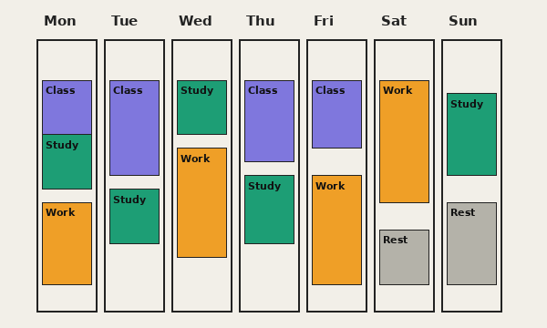

About Time Blocks
Who it is for
Time Blocks is for students who study computer science, work part time and still want room for creative interests such as music production. The goal is a plan that is practical, affordable and honest about limited time.

Where it started
This site began as a class project at UC San Diego.
It uses plain, semantic HTML only.